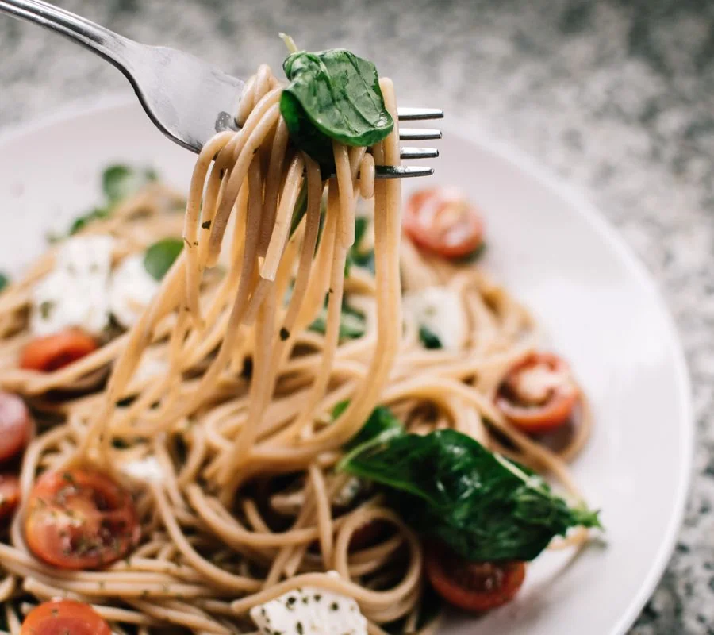

Little Italy · Italian · $$
Cedar Lane Trattoria
Published
Silky tomato sauce, rigatoni with a proper bite, and a dining room that invites you to linger. Cedar Lane gets the little things right, from warm focaccia to a server who knows exactly which glass of red to pour.

In this review
First impressions
Cedar Lane feels welcoming before the first plate arrives. Candlelight warms the small dining room, the tables are close enough for a lively buzz, and the team makes time to walk you through the menu without rushing your order. It is the sort of room that encourages you to put your phone away and settle into the conversation.
The appeal is in the details rather than a big entrance: warm bread coming through the room, the clink of glasses, and a menu you can comfortably read without turning dinner into a research project. We approached it as a neighbourhood dinner, ordering a few things to share before moving on to pasta.
Start with something to share
The focaccia is a sensible first move. Its crisp edges give way to a soft centre, and it is especially useful once the burrata arrives. The cheese is creamy without swallowing up the rest of the plate; sweet tomatoes and olive oil provide enough contrast to keep each bite interesting.
Neither starter needs elaborate presentation to make its point. The pleasure is in combining them: a piece of bread, a little cheese, a tomato, and time to enjoy the table. We would order both again, especially with a small group.

The pasta is the reason to linger
The tomato-sauced pasta is the centre of the meal. The pasta retains a satisfying bite, and the sauce clings to it instead of collecting at the bottom of the bowl. Basil lifts the richness without taking over. It is familiar cooking, but the balance makes the difference between a comforting plate and a forgettable one.
Portions feel generous, so arriving hungry is a good idea. A shared starter followed by a pasta each makes a comfortable dinner; ordering every tempting extra at the beginning would leave less room to appreciate the main event. This is a menu that rewards a little restraint.
An easy place to settle in, with generous pasta and a welcome that makes an ordinary dinner feel like an evening out.
Service, atmosphere, and value
Our server offered wine suggestions in a way that felt helpful rather than rehearsed, asking what we liked before making a recommendation. Plates arrived at a relaxed pace, and there was no pressure to clear the table as soon as the last fork went down.
The room becomes louder as it fills, which is worth keeping in mind if you are looking for a very quiet evening. For friends catching up or an easygoing date, that energy is part of the appeal. Value comes from the combination of generous portions, thoughtful hospitality, and a meal you can enjoy without feeling hurried.


Would we go back?
Yes—for the kind of dinner that does not need an occasion. We would return with a friend, begin with focaccia and burrata, and keep the rest of the order focused on pasta. Cedar Lane’s strength is making familiar things feel cared for, from the first welcome to the last spoonful of sauce.
Our verdict
Worth pulling up a chair?
An easy place to settle in, with generous pasta and a welcome that makes an ordinary dinner feel like an evening out.